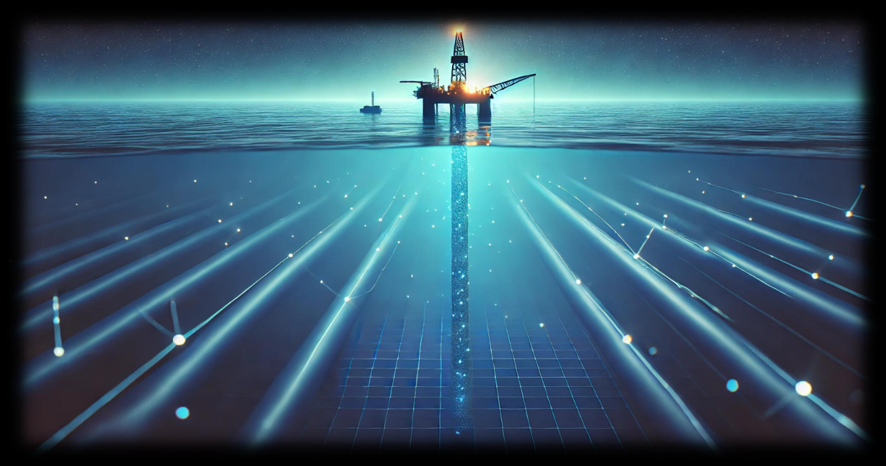

卢家勋Jiaxun Lu
浙江大学博士研究生 · 研究随钻泥浆遥传与水声通信中的信号处理 PhD candidate at Zhejiang University · Signal processing for mud pulse telemetry and underwater acoustic communication
关于About
中共党员，浙江大学海洋技术与工程博士研究生。多年从事随钻泥浆高速信息遥传研究，参与国家重点研发计划。 研究方向涵盖自适应信号处理、噪声对消与实时嵌入式系统，从数千米深的钻井泥浆到近海水声信道，致力于在极端通信环境中还原信号的本来面貌。 CPC member, PhD candidate at Zhejiang University. Years of research on high-speed mud pulse telemetry for downhole communication, participating in National Key R&D Program. Expertise in adaptive signal processing, noise cancellation, and real-time embedded systems.


研究项目Research
随钻高速信息传输
High-Speed Downhole Transmission
MATLAB 多源泵噪声模型 + 卡尔曼/LMS/RLS 自适应滤波，噪声重构精度 >99%，信噪比提升 15dB+。主导 App Designer 实时处理软件开发——1s 延迟，效率提升 90%+。
MATLAB multi-source noise model + Kalman/LMS/RLS adaptive filtering: >99% accuracy, 15dB+ SNR. Led App Designer real-time software: 1s display latency, 90%+ efficiency gain.
高速水声通信
Underwater Acoustic Communication
STFT + 陷波滤波 + MVDR 波束成形，SNR 提升 10dB+，误码率低于 1e-5。Verilog/FPGA 设计 SNR 自适应帧同步，舟山海试零丢帧。
STFT + notch filtering + MVDR beamforming: 10dB+ SNR, BER below 1e-5. Verilog/FPGA SNR-adaptive frame sync, zero frame-miss in sea trial.
水下视觉导航机器人
Visual Navigation Robot
Linux + STM32 + OpenCV + Python OCR + PID 控制，实现水下巡线/避障/目标识别。
Linux + STM32 + OpenCV + Python OCR + PID control for underwater navigation.
成长与奖项Journey & Awards
专注研究，参与"揭榜挂帅"项目
Focused research on mud pulse telemetry, joined the SINOPEC project.
创立"探海神针"团队，发表论文并参与创新创业竞赛
Founded "Tanhai Shenzhen" team, published research, entered innovation competitions.
斩获"创青春"浙江省总冠军，指导海院学子获得多项奖项
Won "Chuang Qingchun" Zhejiang Grand Champion, mentored Ocean College students.
🏆 竞赛获奖（17项）🏆 Competition Awards (17)


论文与专利Publications
社会活动Activities
博客Blog
AI时代和普通人的思考
AI and Ordinary People
从Sam Altman家被扔燃烧弹说起——当AI的发展速度和普通人之间的距离越来越远，我们该如何自处？
Starting from the Molotov cocktail at Sam Altman's home — the growing distance between AI's pace and everyday life.
AI · 随笔Essay2026普通人配置AI工具全景指南
2026 AI Tools Panoramic Guide
从硬件到软件，从本地部署到云服务，一份写给普通人的AI工具配置地图。
From hardware to software, local to cloud — an AI tool map for everyday users.
AI · 指南Guide技能Skills
联系Contact
对音频算法、信号处理、声学工程相关岗位开放中。 Open to audio algorithm, signal processing, and acoustic engineering roles.